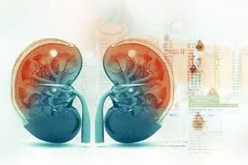
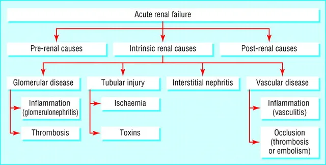
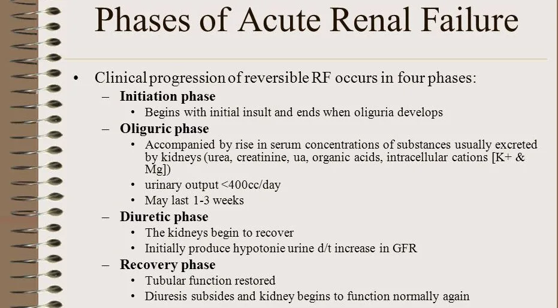
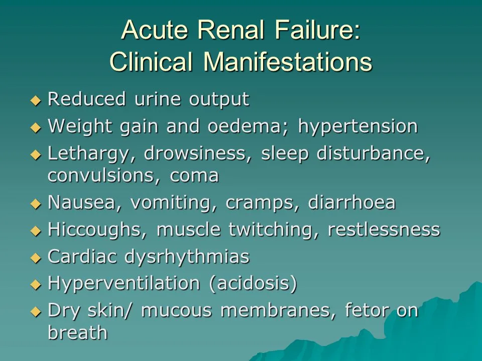
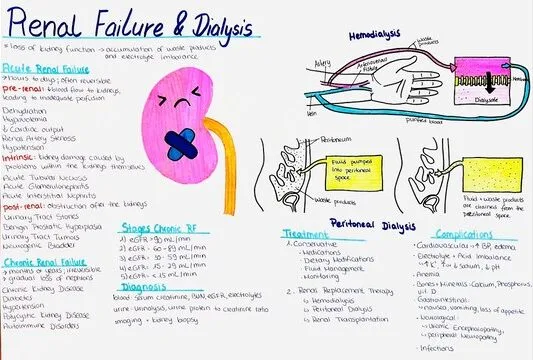

Expanded Nursing Uganda Explanation
Renal failure should be understood beyond a short definition. Link the concept to patient history, focused assessment, common risks, nursing priorities, documentation and evaluation of outcomes.
Contents, 16 sections (tap to expand)
01 RENAL FAILURE (Acute and Chronic)
Renal failure refers to reduction in renal/kidney function .
Renal failure , also known as kidney failure , describes a situation where the kidneys lose their ability to function adequately .
This means they cannot effectively filter waste products from the blood, regulate electrolytes and fluids, or perform their essential endocrine functions.
The term “renal insufficiency” was formerly used but “kidney failure” is now more common, especially when function is significantly impaired.
The fundamental issue in renal failure is a reduction in the kidney’s excretory and regulatory functions .
Excretory Function Loss : Inability to remove metabolic wastes (like urea, creatinine, uric acid) and excess electrolytes (like potassium, phosphate) from the blood and excrete them in urine.
Regulatory Function Loss : Impaired ability to maintain:
- Fluid balance (leading to overload or dehydration).
- Electrolyte balance (e.g., potassium, sodium, calcium, phosphate).
- Acid-base balance (often leading to metabolic acidosis).
- Blood pressure control (through renin-angiotensin system and fluid balance).
Consequences of Kidney Function Failure:
Waste Product Accumulation : Toxic metabolic byproducts (urea, creatinine, nitrogenous wastes) build up in the blood – a condition known as azotemia. If symptoms develop due to azotemia, it’s called uremia.
Fluid Imbalance : Kidneys struggle to excrete excess fluid, leading to fluid overload, edema (swelling in legs, ankles, feet, lungs), and hypertension.
Electrolyte Disturbances :
- Hyperkalemia : High potassium levels (critical, can cause fatal heart rhythm problems).
- Hyperphosphatemia/Hypocalcemia : High phosphate and low calcium (due to decreased excretion of phosphate and impaired Vitamin D activation). This leads to bone disease.
- Sodium Imbalance: Can be high, low, or normal depending on fluid status and intake/output.
Acid-Base Disturbances : Kidneys cannot excrete metabolic acids or regenerate bicarbonate effectively, leading to metabolic acidosis.
Endocrine Disruption :
- Decreased production of erythropoietin (EPO), leading to anemia.
- Impaired activation of Vitamin D , contributing to hypocalcemia and bone disease (renal osteodystrophy).
- Altered insulin metabolism (kidneys help degrade insulin; failure can lead to longer insulin half-life).
02 Types of Renal Failure:
- Acute Renal Failure (ARF) / Acute Kidney Injury (AKI): Characterized by a sudden onset (hours to days) of kidney dysfunction , often reversible if the underlying cause is treated promptly.
- Chronic Renal Failure (CRF) / Chronic Kidney Disease (CKD): Characterized by a gradual, progressive, and irreversible loss of kidney function occurring over months to years.
03 ACUTE RENAL FAILURE (ARF) / ACUTE KIDNEY INJURY (AKI)
Acute Renal Failure is the rapid decline in the kidney’s ability to clear the blood of toxic substances e.g poison, drugs and antibodies that react against the kidneys leading to accumulation of metabolic waste products e.g. urea in blood.
AKI is the abrupt loss of kidney function, resulting in the retention of urea and other nitrogenous waste products and the dysregulation of extracellular volume and electrolytes. It’s characterized by a sudden and often complete loss of the kidneys’ ability to remove waste , occurring over hours, days, or sometimes weeks. While potentially reversible, it carries significant morbidity and mortality.
A healthy adult eating a normal diet needs a minimum daily urine output of approximately 400 ml to excrete the body’s waste products through the kidneys. An amount lower than this indicates a decreased GFR.
Key Markers/Characteristics: AKI is usually marked by:
- Decreased Glomerular Filtration Rate (GFR) : A rapid decline in the rate at which the kidneys filter blood.
- Increased Serum Creatinine and BUN : Azotemia develops quickly as waste products accumulate. Creatinine rise is a key diagnostic indicator.
- Oliguria : Urine output less than 400 ml per day (or <0.5 ml/kg/hr). However, AKI can also be non-oliguric, where urine output is normal or even high, but the kidneys are still not filtering waste effectively. Anuria (urine output <100 ml/day) can also occur.
- Hyperkalemia : Potentially life-threatening elevation of potassium levels due to impaired excretion. (Normal K+ range approx. 3.6 to 5.2 mmol/L).
- Sodium and Water Retention : Leading to edema and hypertension.
- Metabolic Acidosis : Due to impaired acid excretion.
Risk Factors for AKI:
- Hospitalization : Especially ICU admission.
- Advanced Age : Reduced baseline GFR, more comorbidities.
- Pre-existing Chronic Kidney Disease (CKD) : Reduced renal reserve.
- Diabetes Mellitus : Underlying nephropathy, vascular disease.
- Hypertension : Underlying vascular disease.
- Heart Failure : Reduced cardiac output, cardiorenal syndrome.
- Liver Disease : Hepatorenal syndrome, altered hemodynamics.
- Peripheral Artery Disease : Marker of systemic atherosclerosis, may involve renal arteries.
- Sepsis : Hypotension, inflammation, direct kidney effects.
- Volume Depletion (Dehydration) : Common precipitant.
- Exposure to Nephrotoxins : Contrast dye, certain antibiotics (aminoglycosides, vancomycin), NSAIDs.
- Major Surgery : Especially cardiac or vascular surgery (risk of hypotension, emboli).
04 Pathophysiology of Acute Renal Failure/Acute Kidney Failure
Although the pathogenesis of Acute Renal Failure and oliguria is not always known, many times there is a specific underlying problem. ****
There are underlying problems that cause the development of Acute Renal Failure such as hypovolemia , hypotension , reduced cardiac output and failure , and obstruction of the kidney .
Pathophysiology Summary (Simplified Flow): Initial Insult (Prerenal, Intrarenal, Postrenal) → Decreased Renal Perfusion / Direct Tubular/Glomerular Damage / Obstruction → Decreased GFR → Activation of RAAS & Sympathetic Nervous System (attempt to preserve BP/volume) → Renal Vasoconstriction → Further Decrease in Renal Blood Flow & GFR → Tubular Cell Injury/Dysfunction (impaired reabsorption/secretion) → Sodium & Fluid Retention (Edema, Hypertension) → Decreased Waste Excretion (Azotemia) → Decreased Acid Excretion (Metabolic Acidosis) → Decreased Potassium Excretion (Hyperkalemia) → Oliguria / AKI Manifestations
05 Etiology of Acute Renal Failure
This category involves conditions that reduce blood supply to the kidneys, leading to ischemia (reduced blood flow) and damage to the kidney tissue. The kidneys are highly sensitive to blood flow reduction, as they require a constant supply of oxygen and nutrients to function properly.
1. Hypovolemia (Low Blood Volume) :
Causes :
- Hemorrhage : Significant blood loss due to trauma, surgery, or internal bleeding.
- Anemia : Severe anemia reduces the oxygen-carrying capacity of the blood, leading to insufficient oxygen delivery to the kidneys.
- Asphyxia : Suffocation or airway obstruction reduces oxygen intake, compromising oxygen supply to the kidneys.
- Burns : Extensive burns lead to fluid loss and decreased blood volume.
- Dehydration : Inadequate fluid intake or excessive fluid loss due to sweating, vomiting, or diarrhea.
- Gastrointestinal Fluid Loss : Vomiting, diarrhea, surgical drainage, and malabsorption can deplete blood volume.
- Renal Fluid Loss : Osmotic Diuresis: Conditions like diabetes mellitus and hypoadrenalism lead to excessive urine production, depleting blood volume.
- Sequestration in High Vascular Areas : Conditions like pancreatitis and trauma can cause fluid accumulation in certain areas, leading to decreased blood volume circulating to the kidneys.
2. Low Cardiac Output :
Causes :
- Myocardial Diseases: Heart muscle diseases like heart failure, cardiomyopathy, and myocardial infarction can reduce the heart’s ability to pump blood effectively.
- Valvular Diseases: Diseases of the heart valves, like stenosis or regurgitation, can obstruct blood flow and reduce cardiac output.
- Pericardial Diseases : Pericarditis, pericardial effusion, and cardiac tamponade can restrict heart function, leading to reduced cardiac output.
- Arrhythmias : Irregular heartbeats can compromise the efficiency of blood pumping.
- Pulmonary Hypertension : High blood pressure in the lungs increases the workload on the heart, potentially leading to reduced cardiac output.
- Massive Pulmonary Embolism : Blood clots in the lungs can block blood flow, reducing cardiac output.
- Septic Shock: Severe infection can lead to widespread vasodilation and reduced blood pressure, compromising blood flow to the kidneys.
This category involves direct damage to the kidney tissue itself, often triggered by inflammatory or immunological responses.
1. Toxins :
Nephrotoxic Drugs :
- Aminoglycosides : Antibiotics like streptomycin and gentamicin can cause direct damage to kidney tubules.
- Rifampicin : An anti-tuberculosis drug that can be nephrotoxic.
- Tetracycline : An antibiotic that can cause kidney damage, particularly in children.
- Other Nephrotoxins: Contrast dyes, certain chemotherapy drugs, and NSAIDs (non-steroidal anti-inflammatory drugs) can also damage the kidneys.
Heavy Metals : Exposure to heavy metals like phenol, carbon tetrachloride, and chlorates can cause significant kidney damage.
Endogenous Toxins :
- Hemolysis : Destruction of red blood cells, often due to Rh incompatibility, releases toxic substances that can damage the kidneys.
- Uric Acid Oxalates : High levels of uric acid and oxalates in the blood can form crystals that damage kidney tissue.
2. Diseases of the Glomeruli :
- Glomerulonephritis : Inflammation of the glomeruli, the tiny filtering units in the kidneys. This can be caused by infections, autoimmune diseases, or other factors.
- Pyelonephritis : Infection of the kidneys and the pelvis of the kidneys.
3. Acute Tubular Necrosis :
- Causes : Damage to the tubules, the functional units of the kidneys, can be caused by toxins, ischemia, or other factors. This leads to impaired reabsorption and secretion of fluids and electrolytes.
4. Vasculitis : Inflammation of the blood vessels in the kidneys can damage the filtering units and reduce blood flow.
This category involves obstruction of the urinary outflow tract, preventing urine from being drained from the kidneys.
Causes :
- Tumors : Tumors in the bladder, prostate, or other parts of the urinary tract can block urine flow.
- Stones : Kidney stones or bladder stones can obstruct the flow of urine.
- Edema : Swelling in the urinary tract, often due to infection or inflammation, can obstruct urine flow.
- Prostatic Hyperplasia : Enlargement of the prostate gland can compress the urethra, blocking urine flow.
- Other Obstructions : Urethral strictures, congenital abnormalities, and trauma can also cause urinary outflow obstruction.
06 Phases/Stages of Acute Renal Failure
There are four phases of Acute Renal Failure when Initiation phase is included, otherwise they are 3 stages that begin with Oliguria
- Initiation(Onset)or Asymptomatic Phase : The initiation period begins with the initial insult, and ends when oliguria develops. Period from the initial insult until signs/symptoms become apparent. Kidney injury is evolving. Early intervention here can prevent progression. Lasts hours to days. In the early stages of renal failure, often referred to as the asymptomatic phase, the kidneys start to lose their function, but individuals may not experience any noticeable symptoms. This phase can last for months or even years, and kidney damage may progress gradually without apparent signs.
- Oliguric Phase/ Oliguria . This stage is characterized by reduced urine output of <400mls/day. This phase lasts 1-2 weeks. The oliguria period is accompanied by an increase in the serum concentration of substances usually excreted by kidneys. Other symptoms that may manifest during this phase include fatigue, fluid retention leading to edema (swelling), electrolyte imbalances, high blood pressure, and a buildup of waste products in the blood. Significant fall in GFR and urine output (<400 mL/day). Accumulation of fluid, electrolytes (K+, Phos), and waste products (BUN, Cr). Metabolic acidosis worsens. Complications are most likely during this phase.
- Diuretic Phase/ Diuresis . Urine output increases to as much as 4000 mL/day but no waste products, at the end of this stage you may begin to see improvement. The diuresis period is marked by a gradual increase in urine output, which signals that glomerular filtration has started to recover. GFR starts to rise, BUN/Cr start to fall (lagging behind urine output). Patient is at risk for dehydration and electrolyte losses (hypokalemia, hyponatremia). Lasts approximately 1-3 weeks.
- Recovery . The recovery period signals the improvement of renal function and may take 3 to 12 months . If it is insufficient, it develops to Chronic renal failure. GFR increases, and tubular function normalizes. BUN and creatinine levels return towards baseline. Some patients recover fully, while others may have residual kidney damage or progress to CKD.
However, it’s important to note that not all cases of renal failure have a recovery phase, especially in chronic kidney disease (CKD), where kidney damage tends to be irreversible.
● End-Stage Renal Disease (ESRD) : If renal failure progresses to a point where the kidneys are functioning at less than 10-15% of their normal capacity, it is referred to as end-stage renal disease (ESRD). At this stage, kidney function is severely compromised, and individuals require renal replacement therapies such as dialysis or kidney transplantation to sustain life.
07 Clinical features of Acute Renal Failure
Acute renal failure (ARF) is a sudden decline in kidney function, leading to a buildup of waste products in the blood and a disruption in fluid and electrolyte balance.
1. Reduced Urine Output (Oliguria) : Occurs within 1-3 days, a rapid decrease in urine output occurs, often accompanied by a significant rise in blood urea nitrogen (BUN) and creatinine levels.
- Duration: This phase, known as the oliguric phase, can persist for 7-20 days, depending on the severity and underlying cause of ARF.
- Mechanism: The kidneys are unable to effectively filter waste products and excess fluids from the bloodstream, leading to their accumulation.
2. Electrolyte Imbalance :
- Hyperkalemia : Increased potassium levels in the blood due to the kidneys’ inability to excrete potassium efficiently. This can lead to potentially life-threatening cardiac arrhythmias.
- Other imbalances : Sodium, calcium, and phosphate levels may also be affected, contributing to various symptoms.
3. Fluid Imbalance :
- Generalized Edema : Fluid retention due to decreased urine output can cause swelling in the legs, ankles, feet, and even the lungs (pulmonary edema).
4. Gastrointestinal Symptoms :
- Decreased Appetite : Nausea and vomiting are common due to the accumulation of toxins in the body and electrolyte disturbances.
5. Lethargy and Fatigue :
- Weakness and drowsiness : The body’s energy levels are depleted due to impaired kidney function and electrolyte imbalances.
6. Central Nervous System (CNS) Symptoms :
- Drowsiness, headache, confusion : Accumulation of toxins in the bloodstream can affect brain function.
- Muscle twitching, seizures/convulsions : Severe electrolyte imbalances, particularly hyperkalemia, can lead to seizures.
7. Pallor :
- Pale skin : Anemia, a common complication of ARF, can cause pallor due to the kidneys’ inability to produce erythropoietin, a hormone essential for red blood cell production.
8. Pulmonary Edema :
- Dyspnea (shortness of breath) : Fluid accumulation in the lungs can make breathing difficult.
9. Dehydration :
- Dryness of skin and mucous membranes: Reduced fluid intake and inability to excrete waste products lead to dehydration, manifesting as dry skin and mucous membranes.
10. Cardiovascular Signs :
- Congestive heart failure : Fluid overload and electrolyte disturbances can strain the heart, leading to heart failure.
- Severe hypertension : Decreased kidney function can contribute to high blood pressure, potentially leading to complications such as stroke.
08 Investigations/Diagnostic Findings
Urine
- Volume : Usually less than 100 mL/24 hours (anuric phase) or 400 mL/24 hours (oliguric phase)
- Color : Dirty, brown sediment indicates the presence of RBCs, hemoglobin.
- Specific gravity: Less than 1.020 reflects kidney disease, e.g., glomerulonephritis, pyelonephritis.
- Protein : High-grade proteinuria (3–4+) strongly indicates glomerular damage when Red Blood Cells and casts are also present
- Glomerular filtration rate (GFR) : The GFR is a standard means of expressing overall kidney function.
Blood
- Serum Creatinine & BUN(BUN/Cr) : Elevated,BUN:Cr ratio can sometimes help differentiate causes (>20:1 suggests prerenal).
- Complete blood count (CBC) : Hemoglobin (Hb) decreased in presence of anemia.
- Arterial blood gases (ABGs) : Metabolic acidosis (pH less than 7.2) may develop because of decreased renal ability to excrete hydrogen and end products of metabolism.
- Chloride, phosphorus, and magnesium, Sodium, Potassium: Elevated related to retention and cellular shifts (acidosis) or tissue release (red cell hemolysis).
- Estimated GFR (eGFR): Calculated from creatinine, age, sex, race; tracks function over time (less accurate in rapidly changing AKI).
Imaging
- Renal ultrasound: Essential first step. Assesses kidney size (small suggests CKD), checks for hydronephrosis (indicating postrenal obstruction), evaluates renal vasculature (Doppler). Determines kidney size and presence of masses, cysts, obstruction in upper urinary tract.
- Retrograde pyelogram : Outlines abnormalities of renal pelvis and ureters. ● Renal arteriogram: Assesses renal circulation and identifies extravascularities, masses.
- Voiding cystourethrogram: Shows bladder size, reflux into ureters, retention.
- Non Nuclear computed tomography (CT) scan : Cross-sectional view of kidney and urinary tract detects presence/extent of disease.
- Magnetic resonance imaging (MRI) : Provides information about soft tissue damage.
- Excretory urography (intravenous urogram or pyelogram): Radiopaque contrast concentrates in urine and facilitates visualization of KUB(Kidney, Ureter, Bladder)
Kidney Biopsy:
- Performed when the cause of AKI is unclear after initial workup, especially if intrinsic glomerular disease (GN) or interstitial nephritis (AIN) is suspected.
- Involves taking a small sample of kidney tissue via a needle, usually under ultrasound guidance, for microscopic examination. Helps guide specific treatment.
Management of Acute Renal Failure
Aims :
Primary Goal: Identify and treat the underlying cause promptly!
- Prerenal : Restore renal perfusion (fluids, blood products, improve cardiac output).
- Intrarenal : Stop nephrotoxic agents, treat underlying infection/inflammation (e.g., steroids for AIN/some GN), supportive care for ATN.
- Postrenal : Relieve the obstruction (e.g., Foley catheter for bladder outlet obstruction, ureteral stents, nephrostomy tubes).
- Restore Normal Chemical Balance : The primary goal is to stabilize electrolytes, acid-base balance, and fluid volume within safe ranges.
- Prevent Complications : Prevent or manage complications that can arise during the course of acute renal failure, such as fluid overload, electrolyte disturbances, hypertension, and infections, until renal function recovers.
In-Hospital Management:
1. Admission and Rest : Admit the patient to a monitored setting and ensure adequate rest to minimize energy expenditure. Assist with daily activities to conserve energy.
2. Fluid and Salt Restriction :
- Fluid Restriction : Limit fluid intake to 600 ml per day plus the previous day’s fluid loss. This helps prevent fluid overload and edema.
- Salt Restriction: Limit salt intake to less than 2 grams per day (about half a teaspoon). This reduces fluid retention and helps control blood pressure.
3. Fluid Balance Monitoring :
- Fluid Balance Chart : Accurately monitor fluid intake and output (urine, vomit, diarrhea) using a fluid balance chart to assess fluid balance and adjust fluid intake accordingly.
- Overload Prevention : Avoid overloading the patient with fluids by adjusting fluid intake based on the individual’s needs and fluid losses.
4. Edema Assessment :
- Edema Monitoring : Regularly assess for edema (swelling) in the extremities, skin turgor, and fontanelles (in infants) to identify fluid overload or dehydration.
5. Symptom Management :
- Antiemetics (ondansetron, metoclopramide – dose adjust) for nausea, laxatives for constipation, anticonvulsants (levetiracetam often preferred due to renal clearance profile) if seizures occur. Vitamin supplements may be needed if nutrition poor.
6. Vital Signs Monitoring :
- Blood Pressure: Monitor blood pressure twice daily to detect hypertension or hypotension. Antihypertensives if needed, avoiding agents that worsen renal perfusion in certain settings (e.g., ACEi/ARBs if bilateral RAS suspected). Low dose dopamine is NOT recommended for renal protection/vasodilation – proven ineffective.
- Weight : Weigh the patient twice daily to assess fluid balance.
- Other Vital Observations : Monitor other vital signs such as temperature, heart rate, and respiratory rate.
7. Dialysis :Dialysis (Renal Replacement Therapy – RRT): Used when supportive measures fail to control life-threatening complications. Removes waste products, excess fluid, and corrects electrolyte/acid-base imbalances. Dialysis is considered in severe cases to address:
- Fluid Overload : Dialysis can help remove excess fluid, reducing edema, pulmonary edema, and congestive heart failure.
- Hyperkalemia (High Potassium Levels) : Dialysis removes excess potassium from the blood, preventing potentially life-threatening complications.
- Elevated BUN (Blood Urea Nitrogen) : Dialysis can help lower elevated BUN levels, a marker of kidney function.
- Severe Hypertension : Dialysis can help control severe hypertension that is not responsive to medications.
- Metabolic Acidosis : Dialysis can help correct metabolic acidosis, a condition where the body produces too much acid.
Types of Dialysis:
- Hemodialysis : This involves filtering the blood through a machine outside the body.
- Peritoneal Dialysis: This involves using the patient’s peritoneal membrane (lining of the abdomen) as a filter.
Indications of Dialysis (AEIOU mnemonic):
- Acidosis : Severe metabolic acidosis refractory to bicarbonate therapy.
- Electrolytes : Severe, refractory hyperkalemia.
- Intoxications : Dialyzable drug overdoses or toxins (e.g., methanol, ethylene glycol, lithium, salicylates).
- Overload : Fluid overload refractory to diuretics, causing respiratory compromise.
- Uremia : Symptomatic uremia (encephalopathy, pericarditis, severe bleeding).
8. Fluid and Electrolyte Replacement/Management :
- Fluid Management : Critical. Requires meticulous monitoring of intake (oral, IV) and output (urine, drains, GI losses) plus estimation of insensible losses (~500-1000 mL/day). Aim for euvolemic (normal fluid balance). Fluid restriction is often needed in the oliguric phase. Careful IV fluid selection (isotonic preferred, avoid potassium-containing fluids if hyperkalemic). In diuretic phase, it may need significant fluid replacement to prevent dehydration. Daily weights are essential.
- Electrolyte Correction : Monitor and replace/restrict electrolytes (Na+, K+, Ca++, Phos) as needed based on lab values.
9. Nutritional Therapy :
- Goal : Provide adequate calories to prevent catabolism (muscle breakdown, which increases BUN), while managing electrolyte and fluid restrictions.
- Consultation : Renal dietitian consultation is highly recommended. Enteral or parenteral nutrition may be required if oral intake is inadequate.
- Calories : High calorie intake often needed due to hypermetabolic state, especially in critical illness. Primarily carbohydrates and fats.
- Protein : Needs are controversial in AKI. Severe restriction may hinder tissue repair. Moderate intake (0.8-1.2 g/kg/day) often recommended, may increase with dialysis. Needs individualized based on catabolic state and dialysis modality. Moderate protein intake, but provide adequate calories to meet energy needs. Protein restriction helps reduce the burden on the kidneys.
- Electrolyte Restrictions : Potassium, phosphate, and sodium intake usually need to be limited, especially in the oliguric phase.
- Low-potassium foods : Apples, berries, cabbage, carrots, green beans, grapes, rice.
- Avoid high-potassium foods : Bananas, oranges, potatoes, tomatoes, spinach, dried fruits, salt substitutes.
- Diet Considerations : Consider a balanced diet with adequate calories and vitamins, limiting foods high in potassium, sodium, and phosphorus.
10. Electrolyte and Urine Monitoring :
- Electrolytes : Frequently check electrolyte levels (sodium, potassium, calcium, magnesium) to identify and correct imbalances.
- Urine Outpu t: Monitor urine output closely to assess kidney function and adjust treatment as needed.
11. Infection Treatment :
- Antibiotics if infection is present/suspected. Choose agents carefully and adjust doses based on estimated renal function (eGFR). Prefer antibiotics not primarily cleared by the kidneys if possible (e.g., some macrolides like azithromycin, chloramphenicol, doxycycline) or those easily dose-adjusted.
12. Complications Managemen t:
- Hypertension : Administer antihypertensive medications to control blood pressure.
- Convulsions : Treat seizures with anticonvulsant medications.
- Infections : Promptly treat any infections with appropriate antibiotics.
13. Metabolic Acidosis :
- Sodium Bicarbonate : Administer sodium bicarbonate 50-100 mcg to correct metabolic acidosis, which occurs when the body produces too much acid. IV Sodium Bicarbonate may be given for severe acidosis (pH < 7.1-7.2 or HCO3 < 10-12), but use cautiously due to sodium/fluid load. Dialysis corrects acidosis effectively.
- Sodium Bicarbonate Mechanism : Sodium bicarbonate helps restore the acid-base balance in the body, reducing the excess acid.
14. Hyperkalemia Management :
- IV Dextrose 50%, Insulin, and Calcium : Administer intravenous dextrose 50%, insulin, and calcium replacement to shift potassium back into cells, lowering blood potassium levels.
- Diuretic Agents: Diuretic agents can also be used to control fluid volume and aid in potassium excretion.
- Antagonize Cardiac Effects: IV Calcium Gluconate or Calcium Chloride (stabilizes cardiac membrane, does not lower K+).
- Shift K+ into Cell s: IV Insulin with Glucose, Sodium Bicarbonate (if acidotic), Beta-agonists (albuterol nebulized).
- Remove K+ from Body : Potassium-binding resins (e.g., Sodium Polystyrene Sulfonate (Kayexalate), Patiromer, Sodium Zirconium Cyclosilicate), Loop Diuretics, Dialysis (most effective).
15. Skin Integrity :
- Pressure Area Care : Provide proper care of pressure areas to prevent skin breakdown, particularly in severely ill patients.
- Regular Turning : Turn patients regularly to relieve pressure points and promote circulation.
16. Nephrotoxic Drug Suspension :
- Stop Nephrotoxic Drugs : Stop any medications that may be toxic to the kidneys (nephrotoxic drugs).
17. Shock Management :
- Hemorrhagic Shock : Treat shock with blood transfusions in cases of hemorrhagic shock to replace blood loss.
Nursing Management of AKI:
Assessment :
- Frequent vital signs (BP, HR, RR, Temp).
- Strict Intake & Output (often hourly). Calculate fluid balance.
- Daily weights (same time, scale, clothing).
- Assess for fluid overload: Edema, JVD, lung sounds (crackles), shortness of breath, S3 heart sound.
- Assess for dehydration (especially diuretic phase): Skin turgor, mucous membranes, orthostatic hypotension.
- Monitor lab results: BUN, Cr, electrolytes (esp. K+), ABGs, CBC. Report critical values promptly.
- ECG monitoring for signs of hyperkalemia (peaked T waves, wide QRS).
- Assess mental status, neurological checks.
- Monitor for signs of infection (fever, tachycardia, site redness/drainage).
- Assess nutritional status, appetite, GI symptoms.
- Skin integrity assessment (risk of breakdown due to edema, immobility).
- Assess dialysis access site (catheter) if present.
Nursing Diagnoses:
- Fluid Volume Excess (related to decreased GFR/urine output, sodium retention).
- Risk for Deficient Fluid Volume (related to excessive loss during diuretic phase).
- Risk for Decreased Cardiac Output (related to fluid overload, electrolyte imbalance, acidosis).
- Inadequate nutrition (related to anorexia, nausea, dietary restrictions, catabolism).
- Risk for Infection (related to uremia, invasive lines/procedures).
- Risk for Electrolyte Imbalance (Hyperkalemia, Hypocalcemia, etc.).
- Decreased Activity tolerance (related to anemia, uremia, fluid imbalance).
- Excessive Anxiety (related to critical illness, uncertain prognosis).
- Knowledge Deficit (regarding condition, treatment, diet).
Interventions :
- Administer medications as ordered, monitoring for effects and side effects. Adjust doses based on renal function.
- Implement fluid restrictions/replacements accurately. Maintain IV therapy.
- Monitor patient response to diuretics and dialysis.
- Maintain meticulous aseptic technique with all lines and procedures. Catheter care.
- Monitor for and prevent complications (hyperkalemia, fluid overload, infection, bleeding, skin breakdown).
- Provide nutritional support, assist with meals, monitor intake.
- Frequent repositioning, skin care.
- Provide patient and family education about AKI, treatments, diet, and follow-up.
- Provide emotional support and reassurance.
- Collaborate with multidisciplinary team (physicians, dietitians, pharmacists, social workers).
09 CHRONIC RENAL FAILURE
CKD is defined as abnormalities of kidney structure or function, present for more than 3 months, with implications for health. It involves a progressive, slow, insidious, and irreversible decline in renal excretory and regulatory functions .
- Criteria: Either GFR < 60 mL/min/1.73 m² for >3 months, OR markers of kidney damage (e.g., albuminuria [ACR ≥ 30 mg/g], urine sediment abnormalities, electrolyte abnormalities due to tubular disorders, histological abnormalities, structural abnormalities on imaging, history of kidney transplant) present for >3 months.
Chronic Kidney Disease (CKD) : The broader term encompassing all stages of chronic kidney damage/reduced function.
Chronic Renal Failure (CRF): Often used to describe later stages of CKD when GFR is significantly reduced and complications are prominent.
End-Stage Renal Disease (ESRD) : The final stage (Stage 5 CKD), where kidney function is insufficient to sustain life, requiring renal replacement therapy (dialysis or transplantation). GFR is typically < 15 mL/min/1.73 m². This stage is characterized by uremia, the syndrome of symptoms resulting from the accumulation of toxic waste products.
10 Causes of Chronic Renal Failure:
Major Causes:
- Diabetes Mellitus (Diabetic Nephropathy): Leading cause (~40-50%). High blood glucose damages glomerular capillaries.
- Hypertension (Hypertensive Nephrosclerosis): Second leading cause (~25-30%). High blood pressure damages small blood vessels in the kidneys.
Other Causes:
- Glomerulonephritis : Chronic inflammation of the glomeruli (e.g., IgA nephropathy, FSGS).
- Polycystic Kidney Disease (PKD) : Inherited disorder causing multiple cysts in the kidneys.
- Chronic Pyelonephritis : Recurrent kidney infections causing scarring.
- Chronic Tubulointerstitial Nephritis : Long-term damage to tubules/interstitium (e.g., from drugs like lithium, chronic NSAID use, heavy metals).
- Obstructive Uropathy : Long-term blockage (e.g., untreated BPH, congenital anomalies).
- Vascular Diseases : Renal artery stenosis, atheroembolic disease.
- Autoimmune Disorders : Systemic Lupus Erythematosus (SLE), scleroderma, vasculitis.
- Nephrotoxic Agents (Long-term exposure): Certain medications, heavy metals.
- Kidney Stones (Nephrolithiasis): Recurrent stones can cause damage/obstruction.
- Congenital Abnormalities : Structural kidney problems present from birth.
- Risk Factors: Family history of kidney disease, older age, ethnicity (African American, Hispanic, Native American, Asian American have higher risk), obesity, smoking, cardiovascular disease.
Pathophysiology of CKD Progression:
- Initial Kidney Damage : Due to underlying etiology (diabetes, HTN, etc.).
- Nephron Loss : Gradual destruction of functioning nephrons.
- Compensatory Hypertrophy & Hyperfiltration : Remaining nephrons enlarge and increase their individual filtration rate to compensate for the loss. This maintains overall GFR initially.
- Intraglomerular Hypertension : Increased pressure and flow within the remaining glomeruli.
- Maladaptive Consequences : This hyperfiltration, while initially compensatory, eventually becomes damaging. It leads to further glomerular injury (glomerulosclerosis), proteinuria, and interstitial fibrosis.
- Progressive Nephron Loss : A vicious cycle ensues where compensation leads to further damage and loss of more nephrons.
- Declining GFR : As nephron mass falls below a critical level, overall GFR begins to decline steadily.
- Uremia : When GFR falls significantly (typically <15-20 mL/min), waste products accumulate to toxic levels, and regulatory functions fail, leading to the clinical syndrome of uremia affecting multiple organ systems.
Stages of CKD (Based on GFR and Albuminuria – KDIGO Guidelines): Staging helps guide management.
- Stage GFR (mL/min/1.73 m²) Description Clinical Action
- 1 ≥ 90 Kidney damage, normal GFR Diagnose/treat underlying cause, reduce CV risk
- 2 60-89 Kidney damage, mild ↓ GFR Estimate progression, continue risk reduction
- 3a 45-59 Mild-moderate ↓ GFR Evaluate & treat complications (anemia, bone disease)
- 3b 30-44 Moderate-severe ↓ GFR More aggressive complication management
- 4 15-29 Severe ↓ GFR Prepare for Renal Replacement Therapy (RRT)
- 5 < 15 (or dialysis) Kidney Failure (ESRD) RRT (Dialysis or Transplant) required for survival
(Albuminuria is also staged: A1 <30, A2 30-300, A3 >300 mg/g creatinine – higher albuminuria indicates higher risk at any GFR stage)
Clinical Manifestations of CKD (Uremic Syndrome)
Develop gradually as GFR declines, affecting nearly every organ system. Many symptoms are nonspecific initially.
Neurological :
- Early : Fatigue, lethargy, impaired concentration, irritability, depression, sleep disturbances.
- Late : Peripheral neuropathy (restless legs syndrome, burning feet, paresthesias), asterixis, muscle twitching, encephalopathy (confusion, disorientation, memory loss), seizures, coma.
- Cognitive impairment is common.
Cardiovascular (Leading cause of death in CKD):
- Hypertension : Very common (due to fluid/sodium retention, RAAS activation).
- Heart Failure : Due to volume overload, hypertension, anemia, uremic cardiomyopathy.
- Left Ventricular Hypertroph y (LVH).
- Arrhythmias : Especially due to hyperkalemia, hypocalcemia, structural changes.
- Pericarditis : Inflammation of the pericardial sac due to uremic toxins. Can lead to pericardial effusion and tamponade.
- Accelerated Atherosclerosis : Increased risk of MI, stroke, peripheral vascular disease (due to traditional risk factors plus inflammation, oxidative stress, lipid abnormalities, Ca/Phos issues).
- Pitting Edema : Due to fluid retention.
Hematologic:
- Anemia : Normocytic, normochromic. Primarily due to decreased erythropoietin (EPO) production by failing kidneys. Iron deficiency (absolute or functional) and B12/folate deficiency can contribute. Causes fatigue, weakness, pallor, reduced exercise tolerance.
- Bleeding Tendency : Platelet dysfunction (impaired adhesion/aggregation) due to uremic toxins. Leads to easy bruising, prolonged bleeding time.
- Impaired Immune Function : Increased susceptibility to infections (WBC dysfunction).
Gastrointestinal:
- Anorexia , nausea, vomiting (especially in the morning).
- Uremic Fetor: Ammonia-like odor on the breath (breakdown of urea in saliva).
- Metallic taste (dysgeusia).
- Mouth ulcerations (stomatitis), bleeding gums.
- Constipation or diarrhea.
- GI bleeding (uremic gastritis/colitis, platelet dysfunction).
Pulmonary :
- Pulmonary edema (“uremic lung” on CXR) due to fluid overload. Causes dyspnea, orthopnea, crackles.
- Pleuritis/Pleural effusion (similar mechanism to pericarditis).
- Kussmaul respirations (deep, rapid breathing) due to severe metabolic acidosis.
- Thick , tenacious sputum. Increased risk of pneumonia.
Metabolic / Endocrine:
- Metabolic Acidosis : Impaired acid excretion and bicarbonate regeneration.
- Electrolyte Imbalances : Hyperkalemia, Hyperphosphatemia, Hypocalcemia (late), Hypermagnesemia (less common unless intake high). Sodium may be high/low/normal.
- Carbohydrate Intolerance : Insulin resistance, impaired insulin degradation (may lead to lower insulin needs in diabetics as CKD progresses).
- Hyperlipidemia : Altered lipid metabolism (high triglycerides, low HDL).
- Secondary Hyperparathyroidism: Complex process: ↓GFR → ↑Phosphate → ↓Calcium (binds phosphate) & ↓Active Vit D → ↑Parathyroid Hormone (PTH) secretion → PTH tries to ↑Calcium and ↓Phosphate by acting on bone and kidney → Leads to Renal Osteodystrophy.
Musculoskeletal:
- Renal Osteodystrophy : Bone disease resulting from Ca/Phos/VitD/PTH imbalances. Includes osteitis fibrosa cystica (high turnover bone disease due to high PTH), osteomalacia (low turnover), adynamic bone disease (low turnover). Causes bone pain, increased fracture risk, muscle weakness.
Dermatologic:
- Generalized itching (Pruritus) : Common and distressing. Cause multifactorial (uremic toxins, dry skin, high Phos/PTH).
- Dry skin (xerosis).
- Pallor (due to anemia).
- Ecchymoses (easy bruising) due to platelet dysfunction.
- “ Uremic Frost “: Crystallized urea deposits on skin (rare now with earlier dialysis).
- Thin , brittle nails ; thin, dry hair.
Genitourinary / Reproductive:
- Early : Nocturia (loss of concentrating ability).
- Late : Oliguria or Anuria.
- Sexual dysfunction : Decreased libido, erectile dysfunction (men), menstrual irregularities/infertility (women).
Diagnostic Evaluations for CKD:
- Blood Tests : BUN, Creatinine (monitor trends, calculate eGFR), Electrolytes (K, Na, Cl, HCO3, Ca, Phos), Magnesium, Parathyroid Hormone (PTH), Vitamin D levels, CBC (anemia), Iron studies (ferritin, TSAT), Lipid profile, Albumin (nutritional status), HbA1c (if diabetic).
- Urine Tests: Urinalysis (protein, blood, glucose, sediment for casts), Urine Albumin-to-Creatinine Ratio (ACR) (quantifies albuminuria – key marker of damage and risk), 24-hour urine collection (for measured CrCl or protein – less common now).
- Renal Biopsy: Sometimes performed if the cause of CKD is unclear, especially if a treatable condition like certain glomerulonephritides is suspected. Less common than in AKI.
- CBC : Assess for anemia.
- Imaging Studies :
- Renal Ultrasound : Assess kidney size (typically small and echogenic in CKD, except in PKD or diabetic nephropathy where they can be normal/large initially), rule out obstruction, evaluate for cysts/masses.
- CT/MRI : Less routine, used for specific indications (e.g., suspected malignancy, complex anatomy)
11 Management of CKD
Aims of Management
Focuses on slowing progression, managing complications, and preparing for RRT. Requires a multidisciplinary approach.
1. Slowing Progression :
- Blood Pressure Control : Strict control is crucial! Target typically <130/80 mmHg (may vary). ACE inhibitors or ARBs are often first-line, especially in patients with proteinuria/albuminuria, due to renoprotective effects beyond BP lowering.
- Glycemic Control: Tight control in diabetics (target HbA1c ~7% or individualized). SGLT2 inhibitors and GLP-1 agonists have shown significant renoprotective benefits in diabetic kidney disease.
- Treat Underlying Cause : Address glomerulonephritis, infections, obstruction if possible.
- Avoid Nephrotoxins : NSAIDs, contrast dye (if possible), certain antibiotics.
- Smoking Cessation.
- Weight Management.
2. Managing Complications :
- Fluid & Sodium Managemen t: Sodium restriction (usually <2g/day), fluid restriction may be needed in later stages if edema/hypertension present. Loop diuretics (furosemide) often required.
- Hyperkalemia : Dietary potassium restriction, review medications (stop K-sparing diuretics, ACEi/ARBs may need dose adjustment/caution), potassium binders (patiromer, sodium zirconium cyclosilicate) for chronic management.
- Metabolic Acidosis: Oral alkali therapy (sodium bicarbonate or sodium citrate) if serum bicarbonate falls consistently below 22 mEq/L.
- Hyperlipidemia : Statins recommended for cardiovascular risk reduction.
- Cardiovascular Disease Prevention: Manage BP, lipids, glucose; aspirin (if indicated); lifestyle modifications.
- Mineral and Bone Disorder (CKD-MBD) :
- Phosphate Control : Dietary phosphate restriction, Phosphate binders taken with meals (Calcium carbonate/acetate initially; non-calcium binders like sevelamer, lanthanum preferred if calcium high or vascular calcification present).
- Calcium/Vitamin D: Maintain normal calcium levels. Vitamin D supplementation (often active form like calcitriol or analogues) if deficient and PTH high. Avoid excessive calcium intake.
- PTH Control : Use Vitamin D analogues, Calcimimetics (e.g., cinacalcet – increases sensitivity of calcium-sensing receptor on parathyroid gland) to lower PTH if severely elevated despite other measures. Parathyroidectomy in refractory cases.
- Anemia :
- Rule out/treat iron deficiency (oral or IV iron).
- Erythropoiesis-Stimulating Agents (ESAs) like epoetin alfa, darbepoetin alfa to stimulate RBC production. Target hemoglobin typically 10-11.5 g/dL (higher targets associated with risks).
Medications
Antibiotics :
– Class : Antibiotics are medications used to treat bacterial infections.
– Examples : Common antibiotics used for kidney infections include fluoroquinolones (e.g., ciprofloxacin, levofloxacin), cephalosporins (e.g., ceftriaxone, cephalexin), and
trimethoprim/sulfamethoxazole.
– Side Effects : Potential side effects may include gastrointestinal upset, allergic reactions, rash, photosensitivity, and rarely, serious adverse events like tendon rupture (in the case of fluoroquinolones).
– Contraindications : Contraindications may include known allergies to the medication, certain medical conditions, or interactions with other medications. It’s important to discuss your medical history and current medications with your healthcare provider.
Analgesics :
– Class : Analgesics are medications used to relieve pain.
– Examples : Nonsteroidal anti-inflammatory drugs (NSAIDs) such as ibuprofen or acetaminophen (paracetamol) may be used for pain relief in kidney infections or diseases.
– Side Effects: Common side effects of NSAIDs include gastrointestinal upset, stomach ulcers, and kidney problems if used excessively or for a prolonged period. Acetaminophen should be used cautiously in patients with underlying liver disease or if taken in excessive amounts.
– Contraindications : Contraindications may include known allergies to the medication, certain medical conditions (e.g., gastric ulcers, liver disease), or interactions with other medications. Discuss your medical history and current medications with your healthcare provider.
Diuretics :
– Class : Diuretics are medications that increase urine output and help remove excess fluid from the body.
– Examples : Diuretics commonly used in kidney diseases include loop diuretics (e.g., furosemide) and thiazide diuretics (e.g., hydrochlorothiazide).
– Side Effects: Common side effects may include electrolyte imbalances, dehydration, dizziness, and increased urination.
– Contraindications : Contraindications may include known allergies to the medication, certain medical conditions (e.g., severe electrolyte imbalances, kidney failure), or interactions with other medications. Your healthcare provider will assess your specific situation.
****
3. Nutritional Therapy :
- Protein : Moderate protein restriction (e.g., 0.6-0.8 g/kg/day) may help slow progression in pre-dialysis stages (controversial, needs careful monitoring to avoid malnutrition). Once on dialysis, protein needs increase (1.0-1.2 g/kg/day for HD, higher for PD) due to losses during treatment.
- Calories : Ensure adequate caloric intake (25-35 kcal/kg/day) to prevent catabolism.
- Sodium, Potassium, Phosphat e: Restrictions individualized based on lab values and stage.
- Fluid : Restriction often necessary in later stages/on dialysis.
- Vitamins : Water-soluble vitamins (B complex, C) may need supplementation, especially with dialysis losses. Avoid high doses of Vitamin A (fat-soluble, accumulates).
- Requires Renal Dietitian : Essential for education and meal planning.
4. Preparation for Renal Replacement Therapy (RRT) :
- Initiate discussions and education about RRT options (hemodialysis, peritoneal dialysis, transplantation) ideally in Stage 4 CKD.
- Timely placement of dialysis access (AV fistula/graft for HD, PD catheter for PD) well before RRT is needed.
- Evaluation for kidney transplantation (living or deceased donor).
5. Renal Replacement Therapy (RRT) : Initiated in ESRD (Stage 5).
- Hemodialysis (HD) : Blood filtered outside the body via a machine. Usually done 3 times/week for 3-5 hours per session, typically in a dialysis center (can be done at home). Requires vascular access (AV fistula preferred, AV graft, or central venous catheter).
- Peritoneal Dialysis (PD) : Uses the patient’s own peritoneal membrane as the filter. Dialysis fluid (dialysate) is instilled into the abdominal cavity via a surgically placed catheter, dwells for a period, and then drained. Can be done manually several times a day (CAPD) or overnight using a machine (APD). Done at home by the patient.
- Kidney Transplantation : Surgical placement of a healthy kidney from a living or deceased donor. Offers the best quality of life and survival but requires lifelong immunosuppression to prevent rejection. Not all patients are suitable candidates.
12 Nursing Management of CKD:
Focuses on long-term care, education, adherence, monitoring, and supporting the patient through disease progression and RRT.
Assessment :
- Monitor vital signs, daily weights, intake/output.
- Assess for signs/symptoms of uremia and complications (fluid overload, electrolyte imbalance, anemia, bone disease, neurological changes, cardiovascular issues, infection).
- Review lab results (GFR trends, electrolytes, CBC, Ca/Phos/PTH, albumin).
- Assess nutritional status, adherence to dietary/fluid restrictions.
- Medication reconciliation – ensure appropriate drugs and doses for renal function.
- Assess psychosocial status, coping mechanisms, knowledge level.
- If on dialysis: Assess access site (fistula/graft: bruit/thrill; PD catheter: exit site infection signs), monitor treatment tolerance.
- If post-transplant: Monitor for rejection, infection, medication side effects.
Nursing Diagnoses : Similar to AKI but reflect chronicity.
- Fluid Volume Excess.
- Inadequate Nutrition intake.
- Risk for Infection.
- Decreased Activity tolerance.
- Risk for Injury (related to bone disease, neuropathy, falls).
- Disrupted Body Image (related to access, fluid shifts, skin changes).
- Ineffective Coping / Anxiety / Depression.
- Knowledge Deficit (complex regimen, RRT options).
- Risk for Decreased Cardiac Output.
- Risk for Impaired Skin Integrity (related to edema, pruritus, access devices).
- Sexual Dysfunction.
Interventions :
- Patient Education : Crucial for self-management. Teach about CKD, stages, importance of adherence to diet (Na, K, Phos, fluid, protein limits), medications (purpose, side effects, timing – e.g., phosphate binders with meals), BP/glucose monitoring, recognizing complications, RRT options.
- Medication Management : Administer meds, monitor effects, reinforce importance of adherence.
- Dietary/Fluid Management : Reinforce dietitian’s recommendations, help patient find acceptable food choices, monitor intake.
- Monitoring & Surveillance : Track labs, weights, vitals. Assess for complications.
- Symptom Management : Strategies for pruritus (moisturizers, cool baths, antihistamines if ordered), nausea (antiemetics, small frequent meals), fatigue (pacing activities, anemia management).
- Access Care : Meticulous care of HD or PD access sites to prevent infection/complications. Teach patient self-care.
- Psychosocial Support: Encourage expression of feelings, identify coping strategies, refer to support groups or counseling if needed. Address body image concerns.
- Coordination of Care: Collaborate with nephrologist, dietitian, social worker, transplant team, primary care physician.
- Promote Activity: Encourage activity as tolerated to maintain strength and well-being.
- Prevent Complications : Infection control, fall prevention, skin care
General Nursing Interventions of Renal / kidney diseases
1. Monitor vital signs : Regularly assess and record the patient’s blood pressure, heart rate, respiratory rate, and temperature to detect any changes or abnormalities.
2. Assess fluid status : Monitor the patient’s fluid intake and output, including urine output, to evaluate fluid balance and detect any signs of fluid overload or dehydration.
3. Administer medications as prescribed : Ensure timely administration of prescribed medications, including diuretics, antihypertensives, phosphate binders, erythropoiesis-stimulating agents, and other medications specific to the patient’s condition.
4. Monitor laboratory values : Regularly monitor renal function tests (e.g., serum creatinine, blood urea nitrogen) and electrolyte levels (e.g., sodium, potassium) to assess kidney function and guide treatment decisions.
5. Provide dietary guidance : Collaborate with a registered dietitian to develop an appropriate meal plan, considering the patient’s specific renal disease, stage, and dietary restrictions (e.g., limiting sodium, potassium, phosphorus intake).
6. Assess and manage pain : Evaluate the patient’s pain level, provide appropriate pain management strategies, and monitor the effectiveness of pain relief interventions.
7. Educate about self-care : Teach patients about proper self-care techniques, including medication management, monitoring fluid and dietary restrictions, and recognizing signs of complications or worsening symptoms.
8. Monitor for signs of infection: Be vigilant for signs and symptoms of urinary tract infections (UTIs) or other infections and promptly initiate appropriate treatment if necessary.
9. Assist with dialysis or renal replacement therapy: If the patient requires dialysis or other renal replacement therapies, provide support, educate about the procedure, and monitor for any complications or adverse reactions.
10. Promote physical activity : Encourage patients to engage in regular physical activity within their capabilities to promote overall health, manage weight, and improve cardiovascular fitness.
11. Provide emotional support: Recognize the emotional impact of renal disease on patients and their families, and offer emotional support, counseling, or referrals to support groups or mental health professionals as needed.
12. Monitor and manage fluid balance: Assess for signs of fluid overload or dehydration and collaborate with the healthcare team to adjust fluid management strategies accordingly.
13. Prevent complications : Implement preventive measures to minimize the risk of complications such as pressure ulcers, deep vein thrombosis (DVT), and infections.
14. Monitor and manage electrolyte imbalances: Regularly assess electrolyte levels and implement appropriate interventions to correct imbalances, such as administering electrolyte supplements or adjusting the patient’s diet.
15. Provide wound care: If the patient has surgical wounds or access sites (e.g., arteriovenous fistula, catheter), ensure proper wound care techniques and monitor for any signs of infection or complications.
16. Promote optimal nutrition : Collaborate with the dietitian to optimize the patient’s nutritional status, including ensuring adequate protein intake and addressing any specific dietary needs or restrictions.
17. Educate about medication management : Provide education on the importance of taking medications as prescribed, potential side effects, and the need for regular follow-up appointments.
18. Monitor and manage anemia : Assess and monitor the patient’s hemoglobin and hematocrit levels, collaborate with the healthcare team to manage anemia using appropriate interventions such as iron supplementation or erythropoiesis-stimulating agents.
19. Collaborate with the interdisciplinary team : Work closely with other healthcare professionals, such as nephrologists, social workers, and pharmacists, to ensure comprehensive and coordinated care for the patient.
20. Provide patient and family education: Educate patients and their families about their condition, treatment options, lifestyle modifications, and the importance of adherence to the treatment plan
NB . General guidelines & may vary depending on the specific needs of the patient and the stage and severity of their renal or kidney disease.
13 Nursing Uganda Clinical Lens
Use Renal failure as a practical nursing topic, not only a memorized definition. Start with normal structure and function, then connect it to assessment findings and disease.
- What to understand first: define renal failure, identify the normal or expected pattern, then explain what changes when the patient is unwell.
- Why it matters in care: the nurse must recognize risk early, explain findings clearly, document accurately and know when to escalate.
- How to revise it: connect each point to assessment, nursing diagnosis or care problem, intervention, rationale and evaluation.
14 Assessment Guide
- Relevant inspection, palpation, movement, auscultation, vital signs or neurological checks.
- Normal findings, abnormal findings and what each abnormality may indicate.
- Patient history, risk factors and how the body system affects other systems.
15 Nursing Priorities, Rationales and Outcomes
- Use anatomy to explain symptoms and guide focused assessment.
- Recognize findings that need urgent escalation.
- Teach the patient using simple body-system language.
The rationale for these priorities is patient safety: nursing actions should prevent deterioration, reduce discomfort, support recovery and create clear evidence for the next caregiver.
- Expected outcome: The learner can explain normal function, identify abnormal signs and connect them to nursing action.
16 Patient Teaching and Revision Check
- Explain renal failure in simple language the patient or caregiver can repeat back.
- Teach warning signs, medicine or follow-up instructions, hygiene or lifestyle points where relevant.
- For exams, prepare a short answer using: definition, causes or risk factors, signs, assessment, management, complications and prevention.
- For ward practice, document baseline findings, actions taken, patient response and the plan for review.
Illustrations and Diagrams (11)







3 more diagrams available, open the lesson for full illustrations.
Related Video Lectures
Watch nursing lecture videos on YouTube for this topic. Opens in a new tab.
Watch on YouTubeExternal link: YouTube may use its own cookies and terms. Nursing Uganda is not affiliated with YouTube.